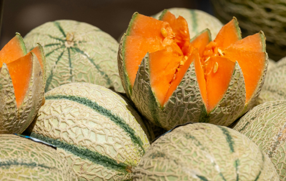
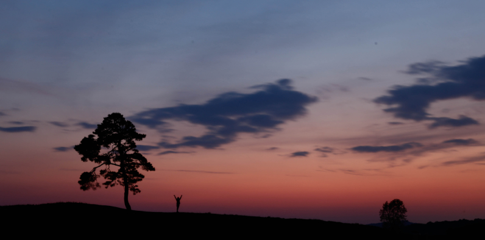

본문콘텐츠영역
함안의 역사
-
삼국시대 초기, 가야 중 아라가야(阿羅伽倻)의 영역이었다. 가야의 여러 소국 중에서 나름대로 영향력이 있었지만 진흥왕 때인 561년, 신라에 멸망했고, 한때 신라판 광역시쯤 되는 아시촌 소경이기도 했다. 신라 경덕왕 때 지금까지 사용하는 이름인 함안군으로 불리게 되었다. 고려시대인 995년(성종 14)에 함주(咸州)가 되었다. 1018년(현종 9)에 함안군이 되었다. 1172년(명종 2)에 함안현이 되었다. 1374년(공민왕 22)에 함안군이 되었다.조선시대인 1505년(연산군 11)에 함안도호부가 되었다. 1506년(중종 1)에 함안군이 되었다.
고려시대인 995년(성종 14)에 함주(咸州)가 되었다. 1018년(현종 9)에 함안군이 되었다. 1172년(명종 2)에 함안현이 되었다. 1374년(공민왕 22)에 함안군이 되었다. 조선시대인 1505년(연산군 11)에 함안도호부가 되었다. 1506년(중종 1)에 함안군이 되었다.
함안의 놀이
- 무진정 낙화놀이
- 공중에 매달린 긴 줄에 숯가루를 넣어 만든 낙화봉을 여럿 매달아
불을 붙이면 불꽃이 떨어지면서 장관을 만드는 대한민국의 민속놀이이다.
매년 정월 대보름, 4월 초파일, 7월 보름 등에 시행되고 있으며 줄불놀이, 줄불이 등으로도 불린다.
- 삼칠줄다리기
- 보통 음력 2월 1일을 개최되는 것이 보통이다.
남부지역에서는 흔히 볼 수 있는 줄다리기 행사중 하나이다.
새해 복과 운수를 기원하는 의미가 있다. 칠원읍VS칠북면, 칠서면 으로 보통 팀을 나누어 줄다리기를 한다.
몇백명이 개미떼처럼 달라붙어 줄을 당기는 광경을 볼수 있다. 2016년 3월 11일 ~ 12일에 걸쳐 행사를 할 예정.
줄다라기 행사가 메인행사이며, 불꽃놀이, 줄다리기, 연등달기, 초청가수 공연으로 이어지는 전형적인 시골축제 스타일의 행사가 이어진다.
- 함안아라문화제
- 함안지역 최대축제이다. 보통 4월 중순에서 말쯤 군민의 날을 전후하여
3일간 함안공설운동장과 함주공원에서 진행된다.
원래이름은 아라제였으나 2017년 이후로 행사명이 변경되었다. 첫날에는 아라대왕행렬과 처녀뱃사공가요제라는 이름의 개막식을 진행한다.
그리고 그후에 불꽃놀이를 한다. 둘째, 셋째날에는 부스형태로 각 단체에서 준비한 행사와 함께, 함안문화예술회관 옆의 공터에서 수박축제를 같이 진행한다.
그리고 말이산고분군 유네스코 등재추진을 기념해 다양한 아라가야시대의 모습을 경험해볼수 있는 다양한 행사도 진행한다.
함안의 특산물
-
- 함암의 다양한 대표 특산물을 경험해 보시드라고~~~~
- 경남의 중심지로서 시설채소의 메카이자 대한민국 대표 수박의 고장인 함안군을 찾아주신 여러분을 진심으로 환영합니다. 지형적 특성으로 주·야간 기온 격차가 크고 재배의 기술적 향상으로 맛좋은 수박, 백자멜론, 단감, 복숭아, 참외 등 다양한 농·특산물을 생산하고 있습니다.
-
함안수박
-

함안가야백제멜론
-
함안포도
-
함안파프리카
-
함안단감
함안9경
-
- 함안 1경함안말이산고분군
- 고대 아라가야의 역사를 만날 수 있는 함안 말이산고분군 능선을 따라 인생사진을 남기는 사람들로 북적이는 함안대표관광지입니다.
- 해발 60m 안팎의 작은 봉우리들이 2km에 걸쳐 있는 주능선 위에 지름 40.2m의 가야 최대 고분 등 대형분이 줄을 지어있다.서쪽으로 뻗은 가지능선까지 아름다운 경관이 이어지는데, 능선을 따라 곳곳에서 인생사진을 남기는 사람들로 북적인다. 또한 함안박물관에 들러 아라가야의 역사를 알고 오르면 더 큰 감동을 느낄 수 있다.봄부터 가을까지 다양한 야생화와 들풀을 관찰할 수 있으며, 별자리 덮개돌 발견 이후 별을 관찰하는 행사도 수시로 열린다. 말갑옷, 배모양토기, 집모양토기 등 가야를 대표하는 유물이 출토된 곳이기도 하다

갤러리
경상남도 함안을 더욱 더 자세히 볼 수 있습니다.
- 